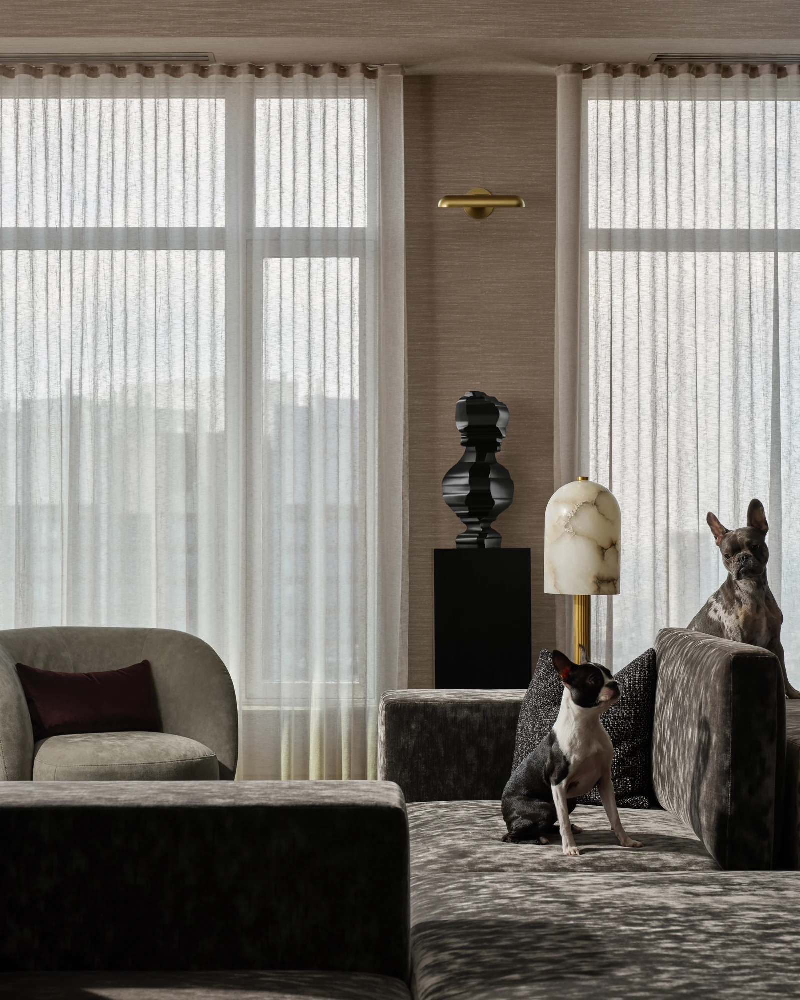
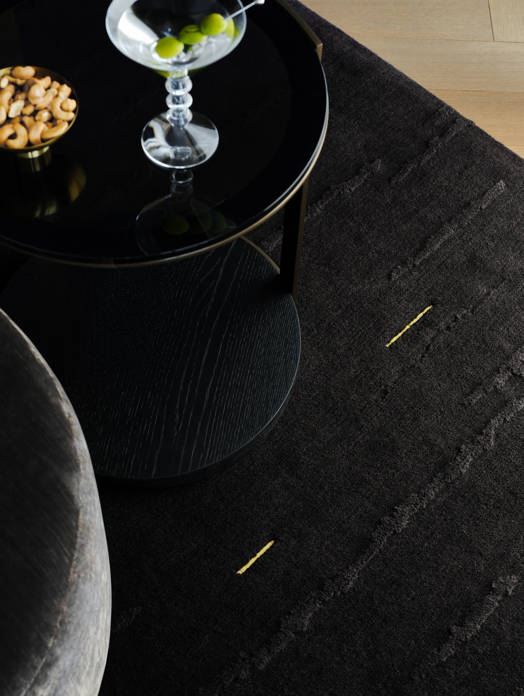

CI Curated
The Home,
Considered Beyond
Construction
CI Curated expands
our integrated
design-build approach
into the layers that make
a residence feel complete
Architecture and construction establish the home. Furnishings, lighting, objects, art, materials, and styling give it depth, personality, and life. CI brings those decisions together into one considered whole
What You Receive
A Home With Depth, Not
Just a Finished Renovation
Construction can be complete while a home still feels unfinished

Scale

Comfort

Furniture

Art
Texture

Objects
CI Curated considers what happens after the walls, millwork, lighting, stone, and flooring are installed
What you see when you enter. What you sit in every evening. What deserves a place of prominence
The goal is not to fill rooms It is to compose a residence
For Clients Who Want a More Complete Design Experience
CI Curated may be the right fit if:
01 / 06
You want CI to design
and build your residence
02 / 06
You want the interiors to continue
beyond the permanent architecture
03 / 06
You value expert furnishing
selection and procurement
04 / 06
You want art considered
within the design rather
than introduced at the end
05 / 06
You prefer a coherent visual
language across architecture,
furnishings, and objects
06 / 06
You want support completing
the home while retaining
more involvement than a full
Turnkey engagement

A beautifully renovated residence can still feel unresolved when architecture and furnishings are treated as two separate projects
Our Responsibility
One Team Managing
Every Stage
Because the same team understands the architecture, we can curate what comes next with greater intelligence
Furniture is considered against circulation and scale
Art is considered against architecture and light
Lighting is considered against material and mood
Procurement is considered against project timing
Each layer belongs to the same story
What’s Included
Design, Build + Curation
Depending on project scope:
- Architecture
- Interior architecture
- Interior design
- Construction
- Project management
- Furnishings
- Custom furniture
- Decorative lighting
- Rugs and textiles
- Window treatments
- Art advisory
- Artwork placement coordination
- Accessories and objects
- Procurement
- Delivery coordination
- Installation
- Styling
The CI Curated Process
From Architecture
to Atmosphere
01
Understand
Your lifestyle, aesthetic point of view, collections, existing pieces, and priorities
02
Design
Architecture and interiors establish the foundation
03
Build
CI executes the permanent environment
04
Curate
Furniture, art, textiles, lighting, and objects are selected or created specifically for the residence
05
Procure
Orders, vendors, lead times, deliveries, and logistics are coordinated
06
Install
The layers come together in the home
07
Refine
Placement, styling, and final details complete the composition
Why Choose CI Curated?
Because Completion
Changes How a Home Feels
CI Curated connects them
There is continuity between the material palette and the furniture
Between art and architecture
Between proportion and placement
Between what is built and how it is ultimately lived in
The result feels collected, personal, and complete, not decorated after the fact
Projects Delivered
Through CI Curated



The Final
Layers
Are Often
the Most
Personal
Let’s create a home that feels complete
because every part belongs